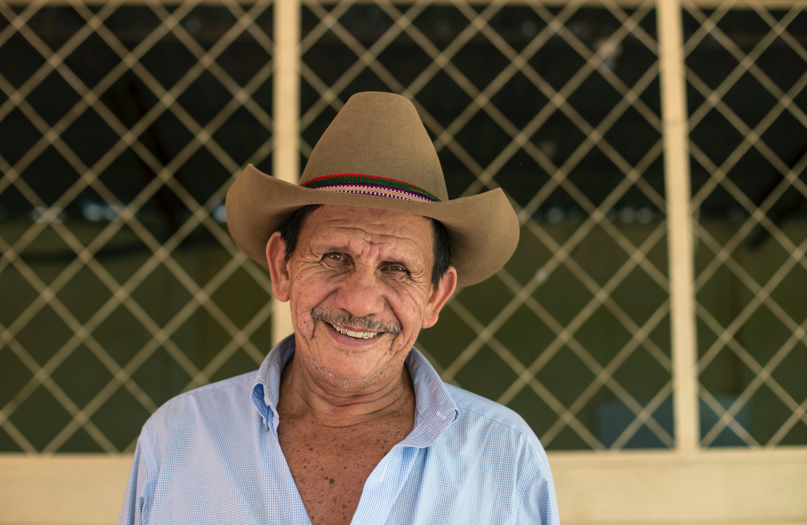

Farmer Speak
What Farmers Say About Us

Laal Singh Chadda, Gaziyabad
I own 7 acres of land and I requested Samadhan for harvesting .Their machines do a quicker and better job.
The harvested crop is cleaner. a product (such as a chemical, fertilizer, or feed for livestock)
used in farming and agriculture When the company decided to look at the complexity it was carrying,
it realized that the actual performance of its agriproducts did not rely on features that
had been requested by (and were now marketed to) customers.